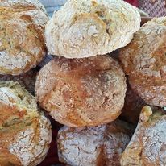
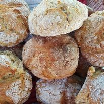
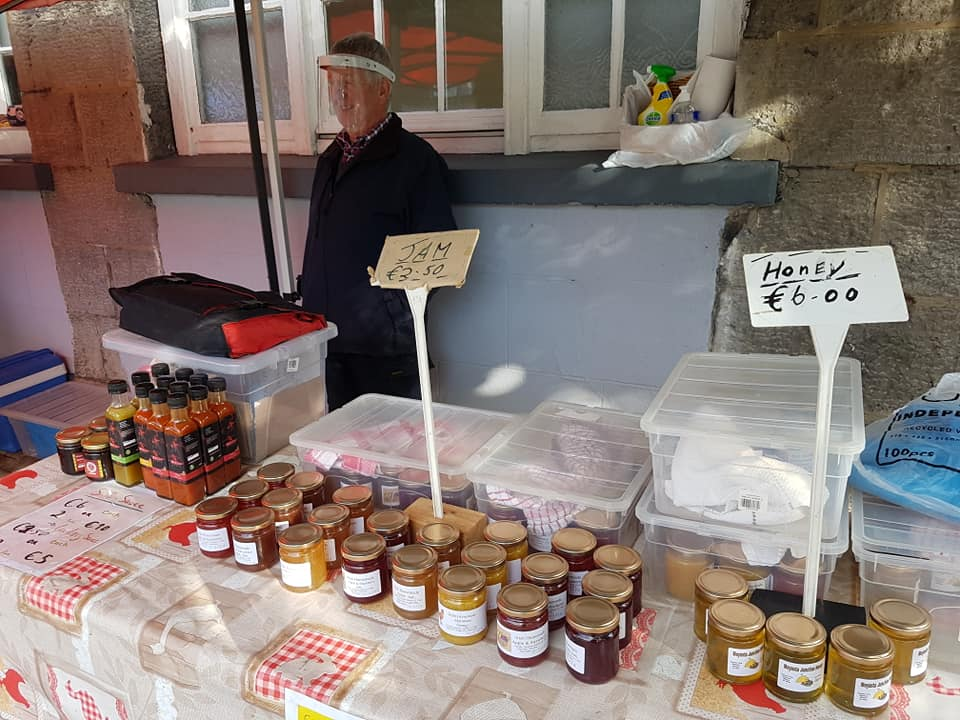

We have a wide range of products here at the Farmers Market. Mick bakes mouth watering homemade brown bread using a recipe handed down from his grandmother. Not only that, he treats us with his ever popular Scones, Guiness Bread, fresh Apple Tarts and more!
 

Eamon is famous for his local Honey. Made from his own beehives located in Moyasta, Eamon has been making his own Honey for decades. Between his honey and Homemade Jams, he is always popular at the market.
